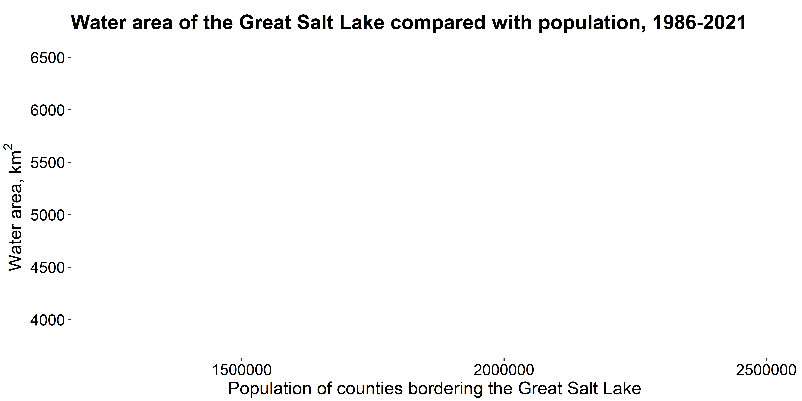
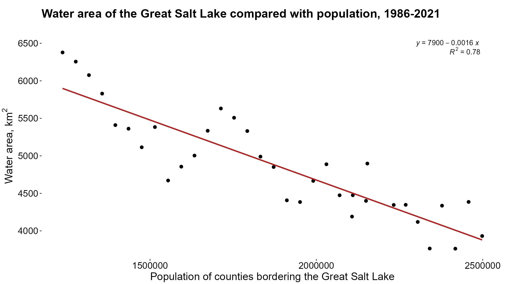

Rows: 34 Columns: 5
── Column specification ────────────────────────────────────────────────────────
Delimiter: ","
dbl (5): year, tpop, area, area_km, tpop_mn
ℹ Use `spec()` to retrieve the full column specification for this data.
ℹ Specify the column types or set `show_col_types = FALSE` to quiet this message.
p8 <-ggplot(data = vars_joined.label, aes(x = tpop, y = area_km))+labs(title ="Water area of the Great Salt Lake compared with population, 1986-2021", x ="Population of counties bordering the Great Salt Lake", y ="Water area,"~km^2)+theme(panel.background =element_blank(), axis.title.x =element_text(size =16), axis.title.y =element_text(size =16, hjust =0.5, vjust =1), axis.text.x =element_text(color ="black", size =14), axis.text.y =element_text(color ="black", size =14), plot.title =element_text(hjust =0, vjust =5, size =18, face ="bold"), legend.key =element_blank(), legend.position ="top", plot.margin =margin(1, 0.1, 0.1,0.1, 'cm')) p8

p7 <- p8+geom_point(data = vars_joined, aes(x = tpop, y = area_km), color ="black", size =2)+geom_smooth(method=lm, se =FALSE, color ="#a82727")+stat_regline_equation(label.x =2300000, label.y =6500, aes(label = ..eq.label..))+stat_regline_equation(label.x =2400000, label.y =6400, aes(label = ..rr.label..)) p7if (!file.exists("../images/pop_vs_area.png")){ggsave(p7, filename ="../images/pop_vs_area.png", width =1920, height =1080, dpi =180, units ='px')}

linreg <-lm(area_km ~ tpop, data = vars_joined)summary(linreg)
Call:
lm(formula = area_km ~ tpop, data = vars_joined)
Residuals:
Min 1Q Median 3Q Max
-719.1 -243.1 -26.2 262.2 494.2
Coefficients:
Estimate Std. Error t value Pr(>|t|)
(Intercept) 7.879e+03 2.847e+02 27.67 < 2e-16 ***
tpop -1.601e-03 1.489e-04 -10.75 3.73e-12 ***
---
Signif. codes: 0 '***' 0.001 '**' 0.01 '*' 0.05 '.' 0.1 ' ' 1
Residual standard error: 322.5 on 32 degrees of freedom
Multiple R-squared: 0.7832, Adjusted R-squared: 0.7764
F-statistic: 115.6 on 1 and 32 DF, p-value: 3.731e-12